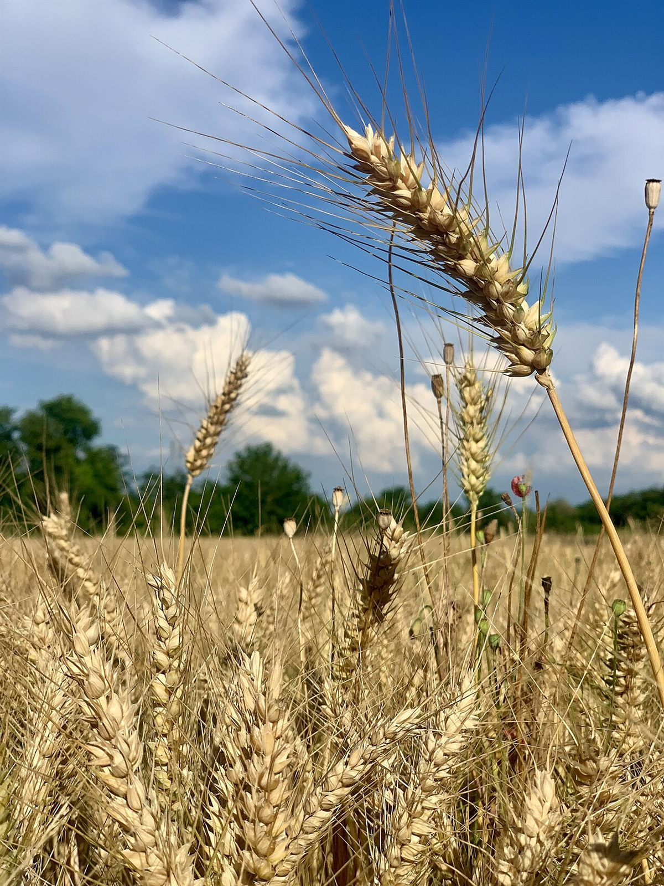
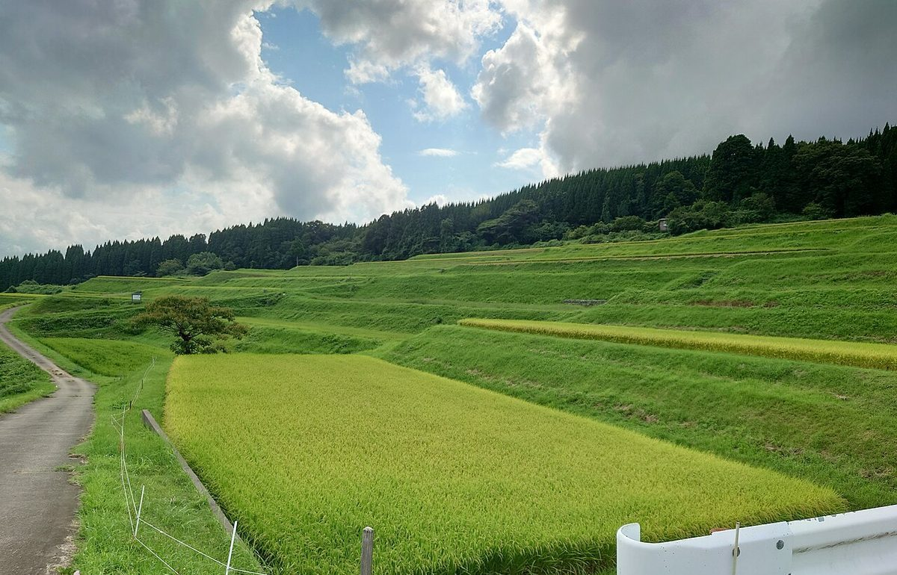
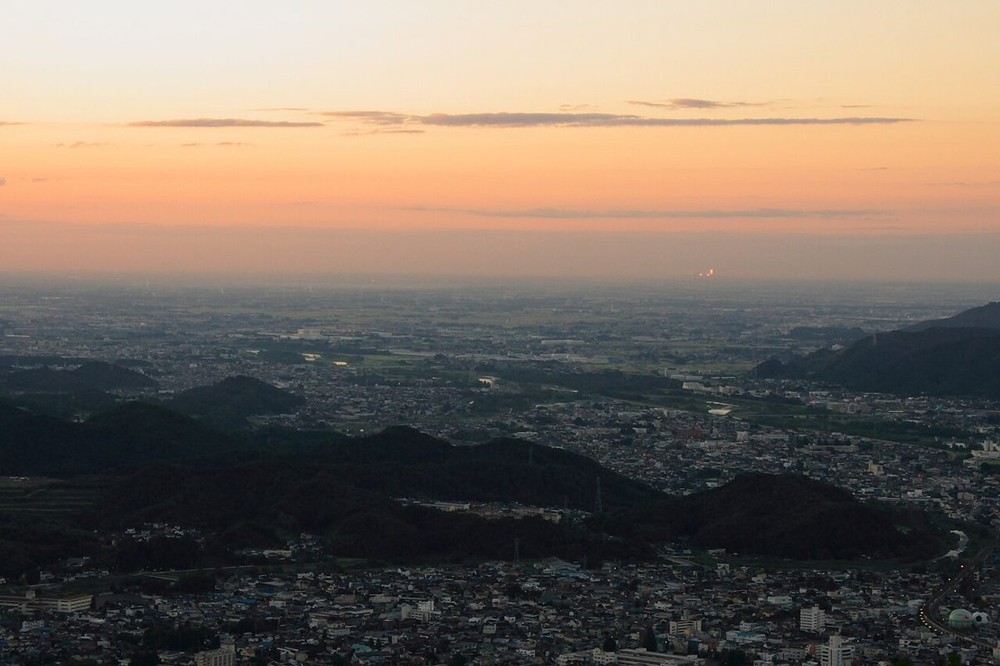

群馬県館林市日向町
田んぼと麦畑のそばで、
ひと息つく時間を。
Giver.cafeは、館林市日向町にあるカフェです。のどかな田園の風景を思わせる、野の花と麦の色をあしらった制作見本ページです。

写真
野のいろ、麦のいろ
館林の田園を思い浮かべながら選んだイメージ写真です。横にスクロールしてご覧ください。





コンセプト案
制作側の案
「野の花と麦畑の色を、一杯のあいだだけ持ち帰る」。館林の田園の景色を、手元の飲み物や焼き菓子の時間につなげるというイメージで、このページを組み立てました。実際のお店の考え方とは異なる場合があります。


メニュー・営業時間
メニュー、料金、営業時間、定休日は準備中(お問い合わせください)。